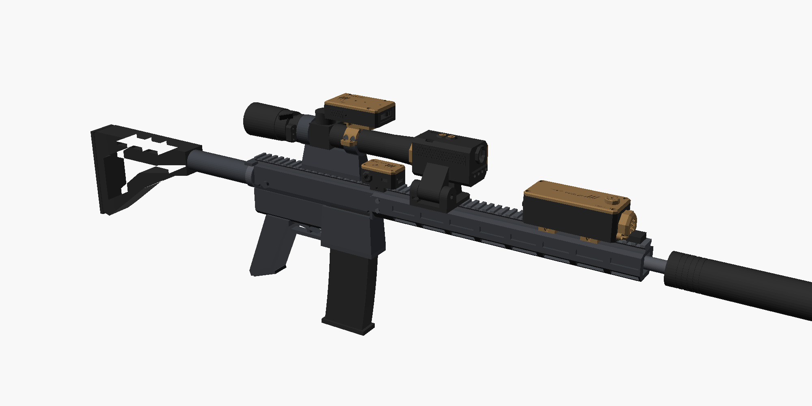
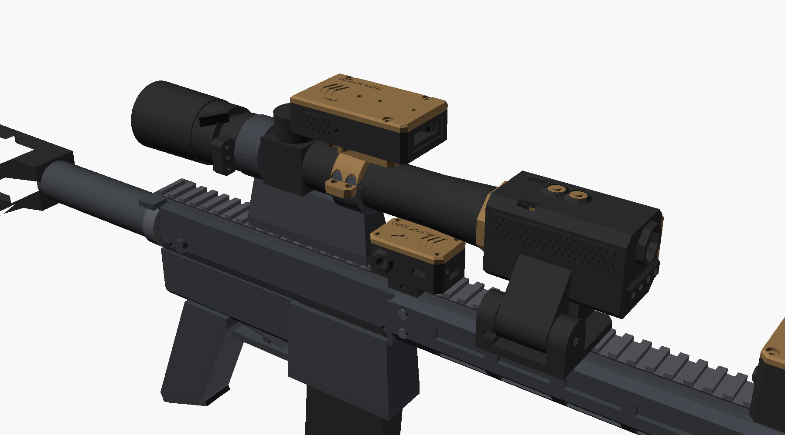
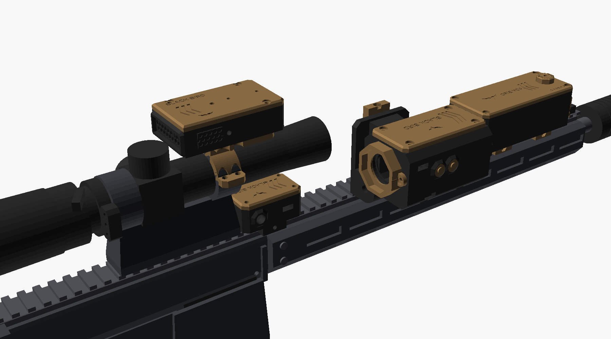
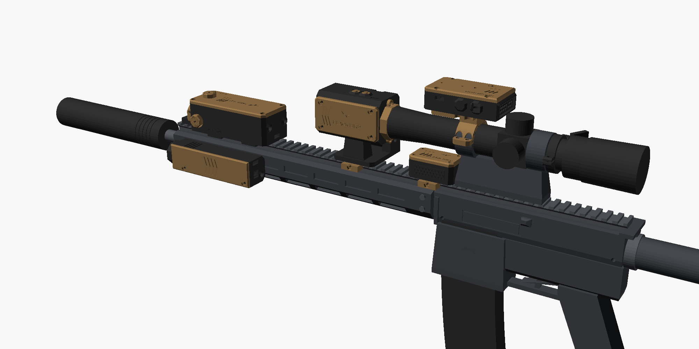
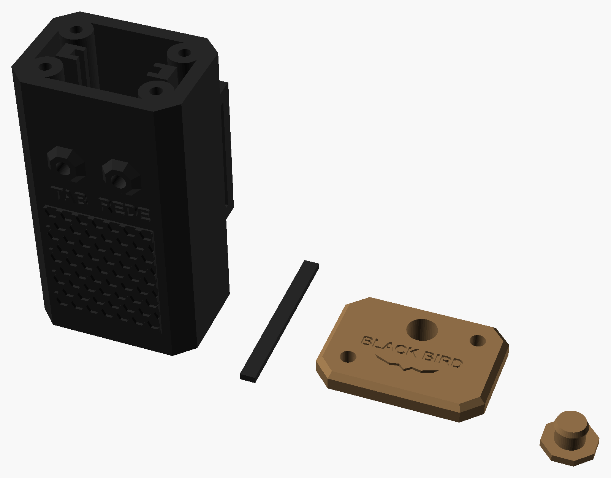
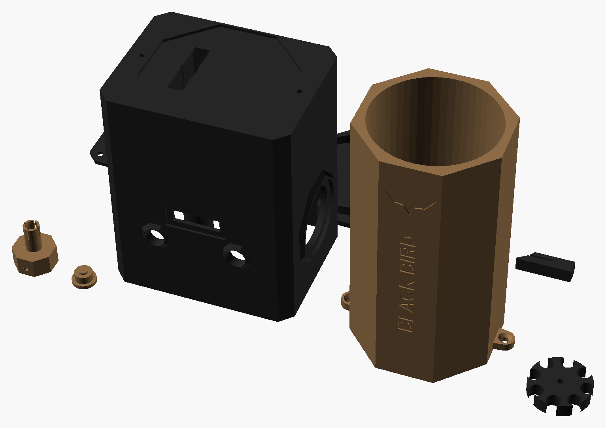
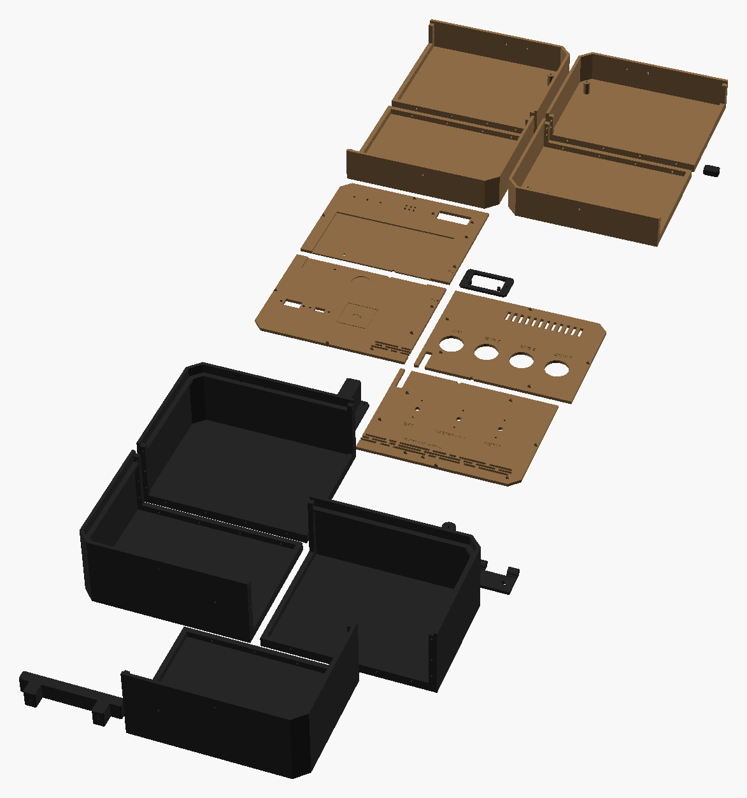

O seu DMR com todos os gadgets
Rossi Neptune Shadow MK16 URG-I 13,5″ (AEG) com Red Win 1-6×24 na Geissele Super Precision alta, a 450 fps, com silenciador, e todos os equipamentos que vão no rifle, cada um na posição que está no projeto dele. As peças vêm dos mesmos modelos 3D das prévias de cada projeto. Medidas em milímetros.
Encoste um cartão de crédito/débito na tela e mova o controle até o retângulo ter exatamente o mesmo tamanho (85,6 × 54 mm).
px/mm01Resumo

02A sua réplica
| Item | De fábrica | No seu |
|---|---|---|
| Modelo | Rossi Neptune Shadow MK16 URG-I 13,5″, AEG 6 mm | igual |
| Comprimento | 890 (coronha aberta) · 800 (fechada) | ≈ 1.020 com o silenciador (≈ 180 mm, CONFIRA) |
| Cano interno | 365 × 6,03 | igual |
| Peso | 2.300 g | ≈ 3,4 kg com luneta, montagem, silenciador e gadgets (estimativa) |
| Velocidade | ≈ 380 fps (0,20 g) | 450 fps (≈ 137 m/s · 1,9 J com 0,20 g; ≈ 116 m/s com 0,28 g) |
| Mecânica | gearbox V2, MOSFET com gatilho eletrônico, hop-up ProWin | igual |
| Guarda-mão | M-LOK 13,5″ com trilho Picatinny em cima | igual; é nele que vão o anti-cant (03) e a visão noturna (14) |
| Magazine | mid-cap M4 de 100 BBs | outro modelo (no desenho, um mid-cap M4 comum; me diga qual é para eu desenhar igual) |
| Luneta | — | Red Win 1-6×24 na Geissele Super Precision alta (eixo a 49 mm do trilho) |
Dados de fábrica: AZ Sports · Loja Blackstar · Bravus Airsoft · Loja da Carabina (fotos do fabricante nessas páginas).
03Vistas de lado
04De cima e com a visão noturna virada



05De trás (o que você vê ao mirar)
06Os gadgets no rifle
| Projeto | Onde vai | Peso (≈) | |
|---|---|---|---|
| 03 Nível Anti-Cant | Unidade no trilho do guarda-mão, logo à frente da Geissele (embaixo da objetiva); pod de 3 LEDs na lateral esquerda do tubo (9 h), perto do anel de zoom, com o aperto às 3 h | 40 g | prévia → |
| 06 ANPEQ (laser verde) | Na ponta do trilho de cima do guarda-mão, logo antes da massa de mira. Torres com clique para pôr o ponto do laser no ponto de impacto da luneta; liga pelo seu acionador de M-LOK (cabo P2) | ≈ 120 g | prévia → |
| 10 Traçante | Dentro do seu silenciador, no lugar da espuma: não aparece por fora. A BB traçante sai brilhando pela boca | ≈ 40 g | prévia → |
| 12 Telêmetro | Em cima do anel da frente da Geissele, numa tampa impressa; laser na frente, tela para você | 85 g | prévia → |
| 14 Visão Noturna | Trilho do guarda-mão, 5–10 mm na frente da objetiva; vira para a esquerda. Para ver a 80 m, vai junto uma lanterna IR 850 nm no M-LOK do lado direito | 150 g | prévia → |
| 14 Lanterna IR 850 nm (montada) | Caixa tática no M-LOK do lado direito do guarda-mão, perto da ponta (2 porcas M-LOK impressas); é ela que ilumina a 80–100 m para a visão noturna. LED 3 W com lente de 5° e 18650 | ≈ 150 g | prévia → |
07Os gadgets que não vão no rifle
Equipamento de jogo, de pulso, de bancada e da base. Clique para abrir a prévia de cada um.
 01Bomba Search & Destroyobjetivo de jogo
01Bomba Search & Destroyobjetivo de jogo
 02Powerbank dos Tabletsno poste, embaixo do tablet da missão
02Powerbank dos Tabletsno poste, embaixo do tablet da missão
 04Cronógrafona boca, para medir os 450 fps (veja a nota do silenciador abaixo)
04Cronógrafona boca, para medir os 450 fps (veja a nota do silenciador abaixo)

05Amplificador de Rederádio dos tablets do Battlefield
07Speedloader Elétricocarrega os magazines do AEG 08Granada de Som e Luzno colete, para o jogo
08Granada de Som e Luzno colete, para o jogo
 09Alvo Acionador de Lâmpadano campo · acende o refletor nos jogos noturnos
09Alvo Acionador de Lâmpadano campo · acende o refletor nos jogos noturnos
 11Scanner de Rádiono colete (MOLLE)
11Scanner de Rádiono colete (MOLLE)

13Cyberdeck BLACK BIRDcomputador de campo · partida de caça08Espaços e interferências
| Ponto | Medida | Situação |
|---|---|---|
| Traçante (10) dentro do silenciador | Ø 32 × 130 | Precisa das medidas de dentro do seu silenciador (veja a prévia do 10). Sem a espuma, o silenciador abafa menos o som |
| ANPEQ (06) na frente da luneta | ≈ 42 de altura | A caixa (37) fica abaixo da visão da luneta (49 − 12 = 37); só a torre de cima passa uns 5 mm, longe da objetiva: fica desfocada e não aparece na imagem. O laser sai ≈ 35 mm abaixo do eixo da luneta: zere na distância em que mais atira (ex.: 40 m) |
| Anti-cant (03) até a objetiva | ≈ 10 | OK |
| Laser do telêmetro (12) por cima da visão noturna (14) | ≈ 5 | OK: a visão noturna não tem nada em cima, então o laser passa livre e dá para medir distância com ela na frente |
| Lanterna IR no M-LOK direito | — | OK: fica abaixo e à direita do eixo da luneta, longe da câmera da visão noturna e da mão de apoio (que vai embaixo/à esquerda). A 80 m o feixe cobre o retículo com folga |
| Visão noturna virada para a esquerda | — | OK: fica longe do pod de LEDs (03), que está mais atrás no tubo, e do telêmetro em cima |
| Trilho livre na frente da objetiva | ≥ 85 | OK: o guarda-mão de 13,5″ tem trilho até a ponta; a visão noturna usa 50 mm de trilho |
| Cronógrafo (04) com o silenciador | Ø 38 | O adaptador de boca do cronógrafo foi feito para o quebra-chamas (24 mm). Para usar na ponta do silenciador, mude QUEBRA_CHAMA_D no 04-CRONOGRAFO/3D/pecas.scad para o diâmetro do seu silenciador e reimprima só o adaptador |
09Custo somado dos gadgets do rifle
| Projeto | Menor | Maior |
|---|---|---|
| 03 · Nível anti-cant | R$ 116 | R$ 176 |
| 10 · Traçante dentro do silenciador (reaproveitando kits, com 1 pote de BB traçante) | R$ 92 | R$ 178 |
| 12 · Telêmetro | R$ 339 | R$ 422 |
| 14 · Visão noturna + lanterna IR montada, para 80 m (reaproveitando kits) | R$ 253 | R$ 440 |
| 06 · ANPEQ, laser verde com ajuste (reaproveitando kits; você já tem o acionador) | R$ 89 | R$ 177 |
| Total (peças impressas não entram) | ≈ R$ 889 | ≈ R$ 1.393 |
Valores de cada prévia (out/2026). O detalhe de cada compra, com os links, está na prévia do projeto.